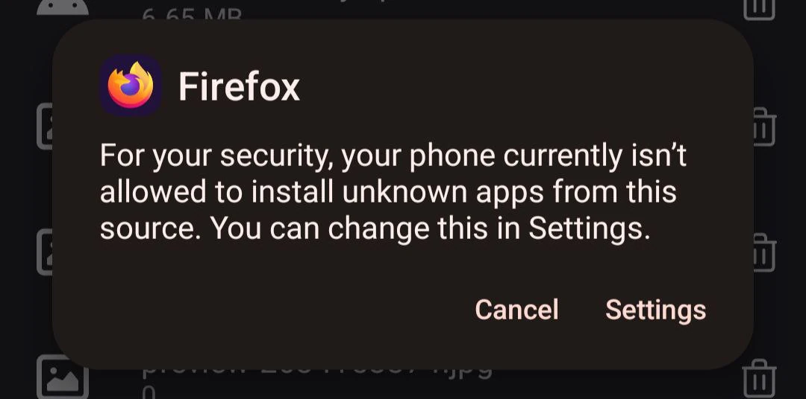
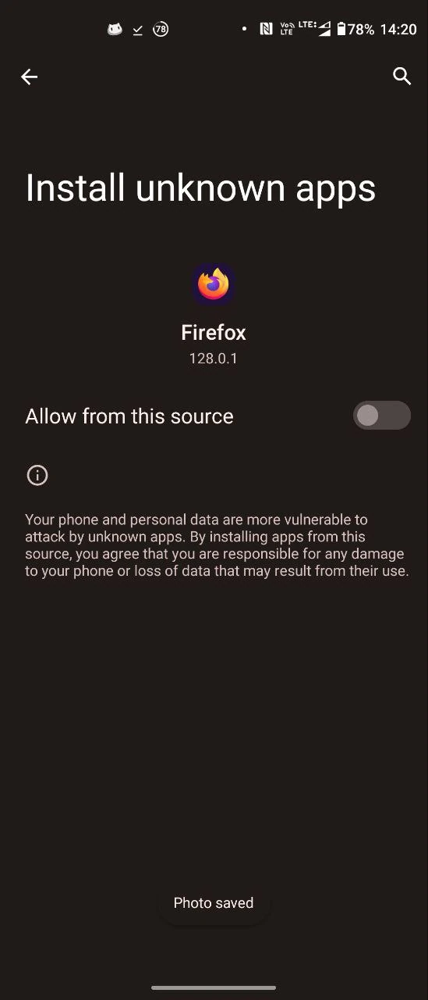

Pomoc w instalacji aplikacji
- Pobierz aplikację ze strony wezuwiusz.eu
- Możesz zostać ostrzeżony, iż twój telefon nie może instalować aplikacji z nieznanych źródeł.
Naciśnij ustawienia i włącz instalację z nieznanych źródeł:
  - Po zezwoleniu czasami będziesz musiał/a jeszcze raz otworzyć pobrany plik. Wybierz zainstaluj.
- Czasami Google Play Protect może wyrzucić błąd, że aplikacji nie udało się przeskanować (gdyż nie jest dostępna w sklepie Play). Kontynuujemy instalację pomimo tego.
Nadal masz problemy z instalacją? Zachęcamy do dołączenia naszego chatu na Telegramie @wezuwiuszchat (w ten sposób otrzymasz odpowiedź najszybciej) bądź kontaktu na nasz adres e-mail: support@wezuwiusz.eu